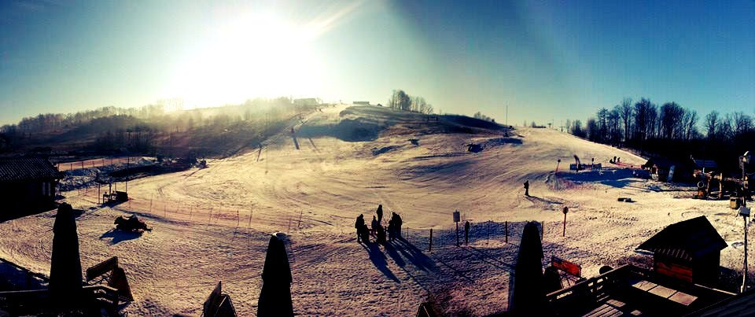
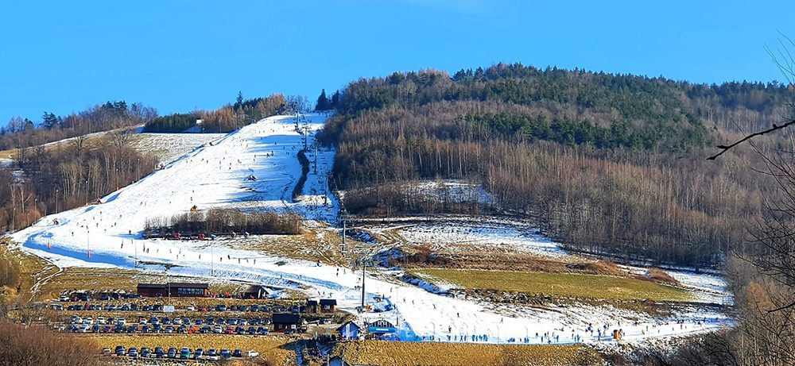

Nieopodal krakowa są tak naprawde 3 stoki warte uwagi pierwszy to Kasina Wielka,
 jeden z wiekszych i nowoczesnych osrodkow. Trasa jest dosc dluga, co pozwala na fajna jazde bez ciaglego stania w kolejce do wyciagu.
jeden z wiekszych i nowoczesnych osrodkow. Trasa jest dosc dluga, co pozwala na fajna jazde bez ciaglego stania w kolejce do wyciagu.
Kolejnym miejscem jest Podstolice ski,

najmniejszy z pośród wymienionych i jako jedyny nieposiada koljki krzesełkowej. Jest tu jednak bardzo fajny klimat i blisko z miasta.Szklana góra

to nowszy stok, ktory ma szeroka trase. Dobra opcja, zeby sie uczyc nowych trikow albo szlifowac skrety, bo jest duzo miejsca.Strona zrobiona przez: Antoni Ochal